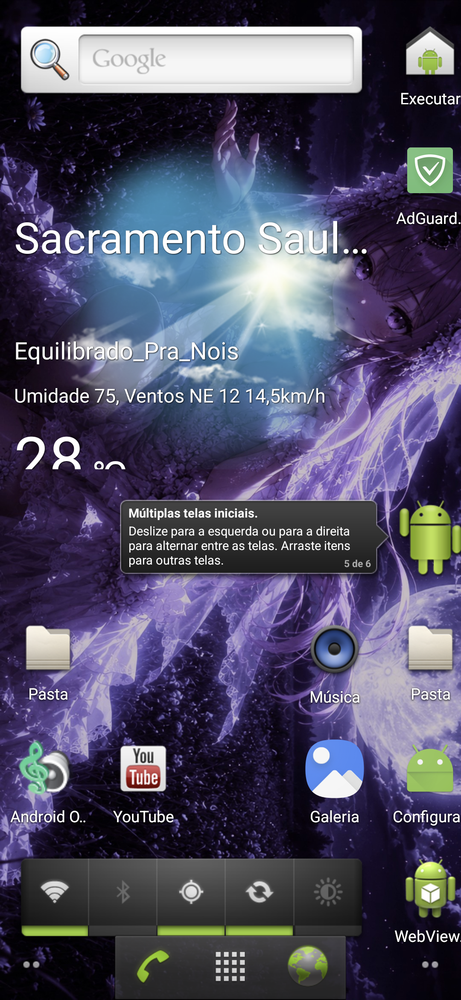
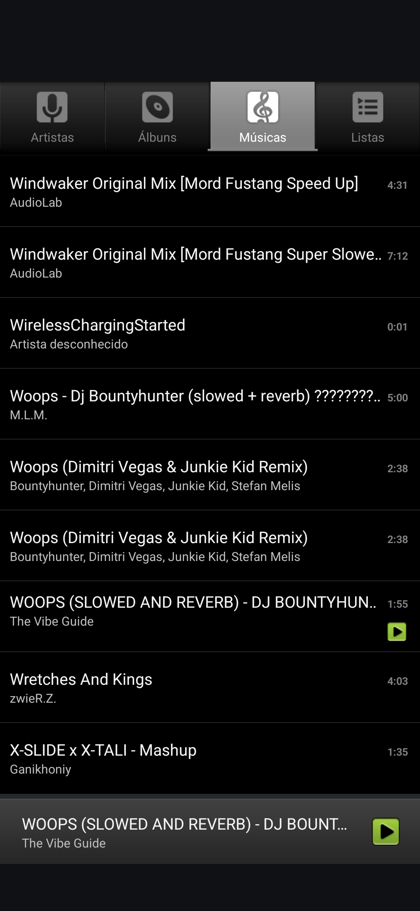

Flagship — Engenharia Reversa Pesada
Trabalhos que exigiram patch em nível de Smali, correção de VerifyError do ART, ou reestruturação de comportamento que não existe em nenhuma documentação oficial.
Launcher3 Quickstep (AOSP 17 → 14)
O port mais desafiador do hub — retroporte completo do launcher CinnamonBun cruzando duas gerações de API incompatíveis.

Modificações realizadas:
• RecentsView transformada em um FrameLayout simples, desativando por completo a tela de apps recentes e reduzindo o launcher ao comportamento de um launcher comum.
• Dezenas de APIs inexistentes na base do Android 14 reescritas ou neutralizadas, já que o app foi extraído diretamente do ecossistema Android 17.
• Stub cirúrgico em DepthController e BaseDepthControllerImpl para desativar o pipeline de blur/depth, incompatível com API 34.
• Correção de VerifyError em WorkspaceItemProcessor.processWidget() causado por conflito de tipo do ART — resolvido reaproveitando registradores v0–v15 já sem valor vivo, em vez de introduzir registradores altos que violam o formato Dalvik 35c.
Android 1.0 Open Source Music Player
O reprodutor de música mais leve do hub — interface clássica do Android 1.0 modernizada sem inchar o binário.

Modificações realizadas:
• Lógica de leitura de áudios inteiramente reescrita, com comportamento adaptado ao Android 14 e APIs mortas substituídas por equivalentes compatíveis.
• Serviço de foreground adicionado no manifest com notificação e no Smali em MediaPlaybackService, garantindo reprodução suave sem o sistema matar a música mesmo com a tela desligada.
DocumentsUI
Gerenciador de arquivos nativo do sistema, repackado para instalar e rodar como app comum, fora do contexto de assinatura de plataforma.

Modificações realizadas:
• Criado um provider interno de acesso à memória do dispositivo, embutido como classe Smali dentro do próprio APK e declarado no manifest, contornando o acesso negado ao armazenamento pelo SAF do Android.
• Reescritas diversas APIs inexistentes na base do AOSP 14.
Ports Ativos — Android 14 & CinnamonBun 17
Compilações estáveis do dia a dia, mantidas em paralelo nas duas gerações de API que este hub cobre.
Launcher3 Quickstep (AOSP 14)
Interface inicial limpa, extraída diretamente de uma ROM AOSP do Android 14.

Modificações:
• Tela de recentes desativada, tornando o app um launcher comum.
• APIs inexistentes do pacote original neutralizadas para estabilidade.
WebviewShell (Browser)
Navegador embutido compilado da árvore Android 14, com funções essenciais adicionadas para uso real.

Modificações:
• Adicionadas ao código as funções de download e upload de arquivos, tornando o navegador minimamente utilizável.
Galeria 3D (Gallery2)
Galeria de fotos clássica do AOSP, compilada de forma independente.

Modificações:
• Bibliotecas nativas extraídas da ROM GSI do AOSP 14 e embutidas no APK, corrigindo o crash e permitindo que o editor de fotos nativo funcione.
LatinIME (AOSP 14)
Teclado nativo do sistema, estável, leve e livre de telemetria.

Modificações:
• Bibliotecas nativas extraídas da ROM GSI do Android 14 e embutidas no APK, corrigindo o crash de inflação do teclado.

Legacy Honeycomb — API 11 Preservado
Apps de 2011 mantidos fiéis à estética original, sem builds de código-fonte publicadas — distribuição apenas em binário.
Launcher2 (Android 3.0)
Interface com a icônica doca do Gingerbread, com sistema de grid completamente livre.

Modificações:
• Bugs de interface corrigidos, incluindo scroll e funções básicas de rolagem.
• Sistema de widgets, apps e atalho funcional adicionado, mantendo a interface holográfica original intacta.
Honeycomb Music Player
Reprodutor musical clássico, com o design nostálgico da era Android 3.0 mantido intacto.

Modificações:
• Corrigida a forma como o app lê as colunas de áudio, eliminando fechamentos forçados, mantendo a API 11 original para compatibilidade.
• Aceleração de hardware adicionada para scroll suave.
• Serviço de foreground adicionado no manifest e no Smali em MediaPlaybackService, evitando que o app seja morto com a tela bloqueada.
Verificação de Integridade
Todos os 10 pacotes acima publicam seu hash SHA-256 junto ao binário. Antes de instalar, gere o hash do arquivo baixado e compare com o valor listado no card correspondente — isso confirma que o APK não foi alterado após a publicação.
Licença e Distribuição
Todos os pacotes distribuídos nesta página operam sob a Apache License, Versão 2.0. Cópia da licença em apache.org/licenses/LICENSE-2.0.
Binários fornecidos são modificações diretas de código-fonte aberto baseadas na infraestrutura AOSP. Distribuídos "no estado em que se encontram", sem garantias ou condições de qualquer tipo.